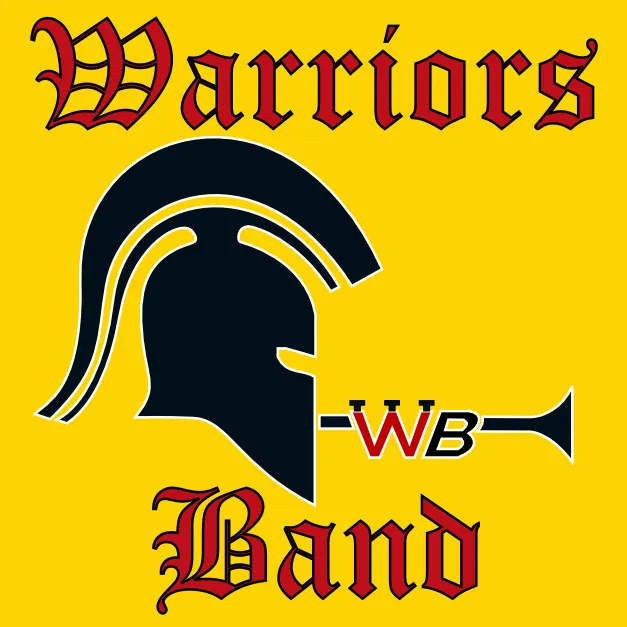

Introdution
Warriors Band
The Waterloo Warriors band is one of the many bands on the University of Waterloo's campus. Known locally as Warriors Band, they are known for being a part of sporting events. As the official school pep band, they rile up the crowd and encourage the audience to cheer for Waterloo.
The band plays mainly for the sports teams of both women and men around Waterloo, not limited to:- Baseball
- Hockey
- Football
- Basketball (Men's Only as of 2023)
- Intramural games
- Parades of all types in Kitchener, Waterloo, and Cambridge
- Playing music in the park during holidays
- Bringing music to the campus with various themes and playing at different locations
- Robotics Waterloo Regional Championship
- Drumline Ontario
- The World Partnership Walk
- Cambridge Arts Festival
- Playing at UW Concert Band Club's End-of-Term Concert
As of 1249, the Warriors Band Drumline is an active subset of the band and can be found at all the same events as well as their own around campus.
History
The band was started by David "Dave" Greenberg and four other members in 1966 because they wanted to play some music at sports games. There were four founding members: two trumpet players and two clarinet players. Since then, as the school's official pep band, Warriors Band has played for many of the university's sports teams as well as events in the community, such as parades. The band has also acquired more variety in the instruments!Historically, the band demanded members pay back the cost of tickets if they didn't attend the requisite number of games. (see September 1969)
Later on, the folktale that the band was founded just to get into games for free emerged. This folktale was accepted as fact for a good while until David Greenburg contested this claim.
The Drumline subset was founded in 116X and even went on to win an award at Drumline Ontario under Nick Boyko. After an 8 year hiatus, the drumline was brought back in 1249.
General Information
Year Numbering System
The Warriors Band date format, voted on in the exec meeting of 1171-68, is the University of Waterloo term code, followed by a hyphen, followed by the number of days since the start of classes for that term (inclusive). This system is not compatible with ISO 8601. For example, the Warriors Band date for May 7th, 2017 is 1175-7. Thomas Broadley built a date converter to convert between the Warriors Band date format, and a year-month-day format but it is no longer available.
Calculating the Term Code:
The first digit of the term code is the century number, starting with the 20th century (19xx) as 0.
The current century (21st; 20xx) is 1.
The second and third digits of the term code are the last two digits of the year. For example, if
the year were 2017, the second and third digits of the term code would be 17.
The last digit of the term code is the number of the month in which the term started:
| Term | Start Month | Last Digit of Term Code |
|---|---|---|
| Fall | September | 9 |
| Winter | January | 1 |
| Spring | May | 5 |
To account for the days. 1 represents the first day of the term. So 1179-15 would be the 15th day of
Fall 2017. Please refer
here for start dates of
the more recent terms.
Here is a table of some past start dates:
| Term | Start of Classes |
|---|---|
| 1139 | 9 September 2013 |
| 1141 | 6 January 2014 |
| 1145 | 5 May 2014 |
| 1149 | 8 September 2014 |
| 1151 | 5 January 2015 |
| 1155 | 4 May 2015 |
| 1159 | 14 September 2015 |
| 1161 | 4 January 2016 |
| 1165 | 2 May 2016 |
| 1169 | 8 September 2016 |
| 1171 | 3 January 2017 |
| 1175 | 1 May 2017 |
| 1179 | 7 September 2017 |
| 1181 | 3 January 2018 |
| 1185 | 1 May 2018 |
| 1219 | 8 September 2021 |
| 1221 | 5 January 2022 |
| 1229 | 7 September 2022 |
| 1231 | 9 January 2023 |
| 1239 | 6 September 2023 |
| 1241 | 8 January 2024 |
| 1245 | 6 May 2024 |
| 1249 | 4 September 2024 |
| 1251 | 6 January 2025 |
| 1255 | 5 May 2025 |
Translating from the Gregorian Calendar:
Let's calculate the Warriors Band date for May 7th, 2017.
The year is 2017, and the term is Spring, so the term code is 1175.
The first day of classes for this term is May 1st, making May 7th the seventh day since the start of
classes.
Therefore, the Warriors Band date for May 7th, 2017 is 1175-7.
Translating to the Gregorian Calender
Let's translate 1171-15 to the Gregorian calendar.
The first digit of the first part of the date is 1, so the year is in the 21st century (20xx).
The second and third digits of the first part of the date are 17, so the year is 2017.
The last digit of the first part is 1, which corresponds to the Winter term.
The Winter 2017 term started on January 3rd. The second part of the date is 15. The fifteenth day of
the Winter 2017 term was January 17th, 2017.
For the current day, here is the starter-converted date, give or take for Office of Registrar dates.
How to modify to the proper date code is shown below the given term code:
For the number to the right of the '-', please subtract the day classes started. For example, if it
is August 27th and classes started May 5th, I would subtract 5 from the number on the right so the
code would go from 1245-119 to 1245-114. If you are also between classes at the start of the month,
e.g. September 1st, and classes of the fall term start on the 5th, add the numbers of days in the
month to the total days of the previous term as well as using the year/month code of the previous
term.
| Term | Total Number of Days |
|---|---|
| Fall | 122 |
| Winter | 120 or 121 (if it's a leap year) |
| Spring | 123 |
Ex September 1st, 2024, classes start September 5th of 2024:
Displayed course code: 1249-1
Modified course code: 1245-124
Brief Executive List
Here is a current list of all currently active executive roles in the Warriors Band. Information on retired roles can be found on the "Executive" page as well as more information on the tasks of each listed role.- Battery Captain - Leader of the drumline
- Chief Centurion of the Warriors Band (CCWB) - Leader
- Deputy Chief Centurion of the Warriors Band (DCCWB) - Second in Command
- Navigator - Plans route to performance location
- Quartermaster - Keeps the storage room tidy
- Secretary - takes notes during meetings and helps with administrative stuff
- Social Media Manager - Uploads stuff to the band's social media accounts
- Technomancer - Deals with anything computer-related and runs elections
- Treasurer - Deals with band finances
Band Culture
Game Etiquette
At sports games the band has a set of procedures that are done to hype the team.Basketball Games:
- Always stand and play USAF until Waterloo gets their first point.
- Count the number of times the basketball is bounced when the opposing team takes a foul shot, ending with a shout.
- Show how many foul shots have been taken on your hand when Waterloo is taking foul shots.
Volleyball Games
- Count the bounces during the opposing team's serve, end with a shout.
The Art of Counting
English
One, two, three, four, five, six, seven, eight, nine, tenFrench
Un, deux, trois, quatre, cinq, six, sept, huit, neuf, dix- Bon appetite!
- Guarde l'eau! (Watch out for "the water")
- Pamplemousse! (Grapefruit, from the counting game)
German
Eins, zwei, drei, vier, funf, sechs, sieben, acht, neun, zehn- Gesundheit!
Cheers
- That's alright, that's okay. You're going to work for us someday!
- The tide has turned, let's give them our all, all-temperature cheer!
- Harass them, harass them, make them relinquish the ball!
- Go clock go!
- Generic defensive cheer!(It works!)
- Another defensive cheer!
- Insert cheer here!
- Ignore them, ignore them, maybe they'll go away.
- Stop'em, stop'em, ya ya ya!
- Sit down {opposing team's coach name here}
-
Rickety Rickety Ree, kick him in the knee
Rickety Rickety Rass, kick him in the other knee. -
Hail Waterloo (Hail Waterloo) X3
Hail {other team here}? HAIL NO! - Put it in the basket! X3
- Football!
Awards
Sacred Order of the Broken Cymbal:
This award goes to the member who goes above and beyond in their duty and brings an energetic vibe to the band.
The Battered Drumstick:
The Bass Drum Bounty:
The Bass Drum Bounty states that if a member breaks the bass drum during performance (i.e. uses a mallet and smacks the drum so hard it breaks), they win a pizza.
No one has ever claimed the full bounty. However, years ago, a partial bounty of 1 pizza slice was given to Alex McVittie after he accidentally ran into the drum with his baritone saxophone. Legends say this incident occurred during the Santa Claus parade, where cold weather impacts the integrity of the bass drum material.
Traditions/Band Culture
The Warriors Band has a variety of traditions:- When a band member graduates, they are to sing the school song's lyrics to "The Black and White and Gold" at the end of practice.
- When a band member has a birthday, the band will play Happy Birthday while the band member stands in the centre. It really brings the band close together. ;)
- 2:30 is a time of day particularly associated with the Warriors Band. Gaetan Boué originally developed the association, the reasons for which have been lost in the sands of time, but are possibly related to "W" being the 23rd letter of the alphabet. To add, at games when the clock strikes 2:30, band members will shout "U-W, U-W, U-W" while making a U with their arms and swooping them out to make a W shape.
- U.S Air Force will be played at basketball games on repeat until a basket is scored.
Jokes
$10:
"The band will only cost you $10!" This is not true due to instrument rentals and a slight increase in membership costs. Back in the day this was the case (excluding instrument rentals).The Website:
"Is the website up yet?", "Does the website work yet?", "We have a website?" and similar phrases are common inside jokes in the band. Although the website has been fairly stable since the move to the CSC servers, the unreliability of the previous version of the website had a lasting impact on its older members.Although downtime is rare nowadays, the availability of the current website is dependent on the availability of the CSC servers. In one memorable case in 1159, there was a problem on the servers that would cause the website to go down every night after 20:00 for a few weeks. The issue was eventually resolved, but it lives on in the jokes.
The website before Eva Pearson was also very outdated/unusable, so band members were never informed of its existence.
Emails:
Every term there seems to be at least one member that does not read emails or forgets to read an email once. This person then becomes known as the person who never reads the emails and jokes ensue that they are constantly missing out on important information.Sports:
A favourite cheer in the Warriors Band is as follows:Leader: "SPORTS!"; Band: "SPORTS!"; Leader: "SPORTS!"; Band: "SPORTS!"; Leader: "SPORTS!"; Band: "SPORTS!"; All: "AHHHHH!"
The popularity of this cheer is such that any mention of the word "sports" will result in a spontaneous performance of this cheer.
Warriors Band |
|
|---|---|
|  | |
| Taglines: |
"One of the bands (in Canada)" "Loud is good, fast is better, loud and fast is best" "Clamosum bonum, celere maius clamosum, clamosum et celere est optimus"(The above quote but in Latin) "Causing Hearing loss since 1966" "We do it with perfect rhythm" "The most disruptive band on campus since 1966" |
| Number of Eardrums broken | many |